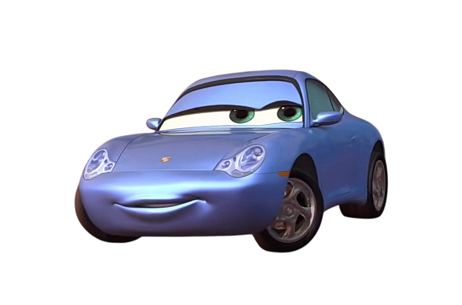
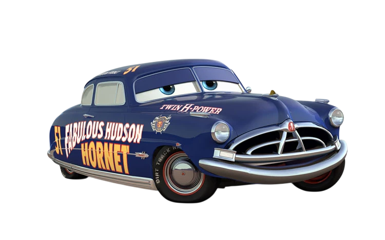
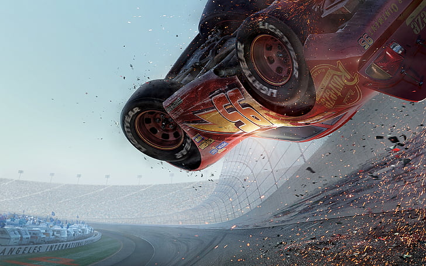
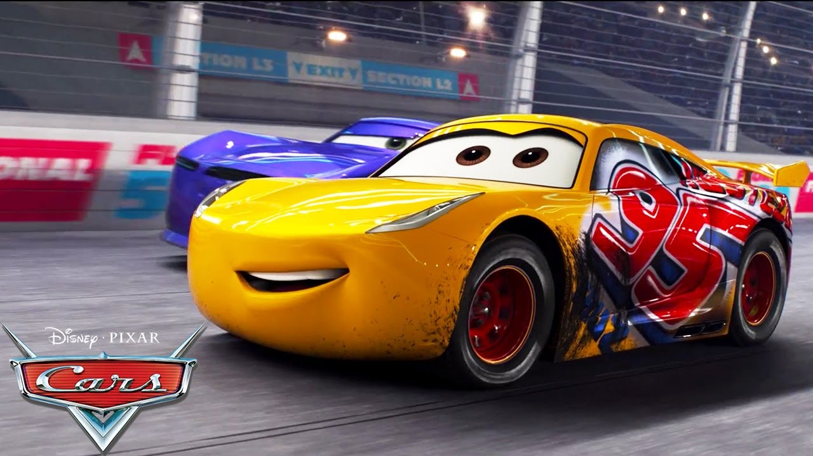

1 ПОБЕДИТЕЛЬ, 42 ЛУЗЕРА
Я — СКОРОСТЬ
7-КРАТНЫЙ ЧЕМПИОН КУБКА ПОРШНЯ


7-КРАТНЫЙ ЧЕМПИОН КУБКА ПОРШНЯ

Молния МакКуин — гоночный автомобиль с номером 95, главный герой мультфильма «Тачки» студии Pixar. Он быстрый, яркий и очень самоуверенный — особенно в начале.
Всё изменилось когда он случайно попал в маленький городок Радиатор-Спрингс. Там он нашёл настоящих друзей и понял что победа — это не главное в жизни.
Цвет: красный. Номер: 95. Любимая фраза: Kachow!

Лучший друг МакКуина. Старый добродушный эвакуатор из Радиатор-Спрингс. Обожает рассказывать истории и ездить задом наперёд.
Узнать подробнее
Голубая Porsche, хозяйка мотеля в Радиатор-Спрингс. Умная и добрая — именно она помогла МакКуину увидеть красоту простой жизни.
Узнать подробнее
Легендарный Хадсон Хорнет — трёхкратный чемпион «Поршневого кубка». Поначалу встретил МакКуина в штыки, но стал его наставником и, пожалуй, самым важным человеком в его карьере.
Узнать подробнее
В «Тачках 3» МакКуин на пике карьеры сталкивается с молодым гонщиком Джексоном Штормом — быстрым, холодным и безжалостным. Пытаясь выжать из себя максимум он не справляется с управлением и на огромной скорости врезается в стену. Авария страшная — обломки летят по всей трассе, МакКуин переворачивается несколько раз. Все думают что карьера окончена.

После восстановления МакКуин понимает — прежним уже не будет. Шторм слишком быстр. И тогда прямо во время финальной гонки он останавливается в боксах и передаёт место своей ученице — Круз Рамирез. Сам ведёт её по рации, подсказывает каждый поворот. Круз выигрывает. МакКуин проигрывает гонку — но выигрывает кое-что важнее.